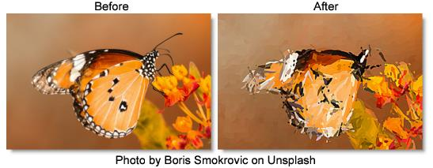

S_Autopaint
Description
Generates a paint-brushed version of the image.
The S_Autopaint filter comes from the Emmy award winning Boris FX Sapphire filter set.
Category
Stylize.
Controls
Presets
To select a preset, pick one from the Presets window.
Style
Selects the style of brush strokes.
Van Gogh
The stroke directions align with the edges found within the image.
Hairy Paint
The strokes are perpendicular to the edges within the image.
Pointalize
The strokes are cellular pointy shapes with no direction.
Frequency
The density of brush strokes in the frame. Increase for smaller strokes.
Stroke Length
Determines the length of the brush strokes along the directions of edges in the image. If this is negative, you can switch from VanGogh to HairyPaint styles and vice versa.
Stroke Align
Increase to smooth out the directions of the strokes so nearby strokes are more parallel.
Smooth Colors
Blurs the source by this amount before generating the brush strokes. Increase to cause the colors of nearby strokes to be more consistent.
Seed
Used to initialize the random number generator. The actual seed value is not significant, but different seeds produce different results and the same value should give a repeatable result.
Sharpen
The amount of post-process sharpening applied.
Sharpen Width
The width at which to apply the post-process sharpening filter, relative to the stroke sizes. Higher values affect wider areas from the edges, lower values only affect areas near sharp edges.
Mix With Source
Interpolates between the result (0) and the original source (1).